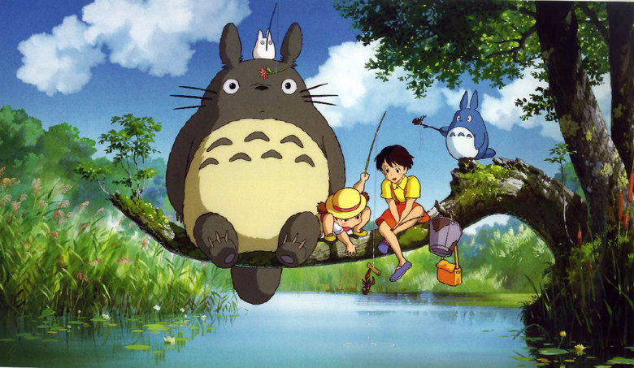

<ui-popup>, with the full feature set (any markup,
triggers, events, flipping), and as a CSS-only data-tooltip attribute, which needs no
script and suits pages with many short hints.
An element can display a popup that is already included in the page.
<ui-popup> is markup already in the page: there is no
data-html string to build one from.Does not include upload or chat.
An element can specify a simple tooltip that can appear without JavaScript via the
data-tooltip attribute. If the tooltip should be shown inverted, also add the
data-inverted attribute.
::before and ::after pseudo-elements, and
screen readers don't reliably announce them: use them for hints only, and a
<ui-popup> for anything that matters.A tooltip can vary in size via the data-variation attribute.
data-variation attribute takes several words, just like a class would: sizes,
basic, fixed, multiline, visible and
colours.
A tooltip can show multiple lines via line breaks in the attribute and adding
multiline to the data-variation attribute.
.
A popup can be extra wide to allow for longer content: wide, wide="very".
wide. Add fixed to make it always that wide; the CSS-only tooltip takes
fixed, wide fixed and very wide fixed in its
data-variation.A fluid popup takes up the entire width of its target.
fluid button).2 projects, $10 a month
5 projects, $20 a month
8 projects, $25 a month
offset / data-offset, boundary,
scrollContext, lastResort and the transition setting -- CSS
anchor positioning places and flips the popup; set the gap with --ui-popup-distance and
the motion with --ui-popup-duration.show, hide, toggle,
reposition ...) and callbacks (onShow, onHidden ...) -- write
open, and listen for ui-open / ui-close.